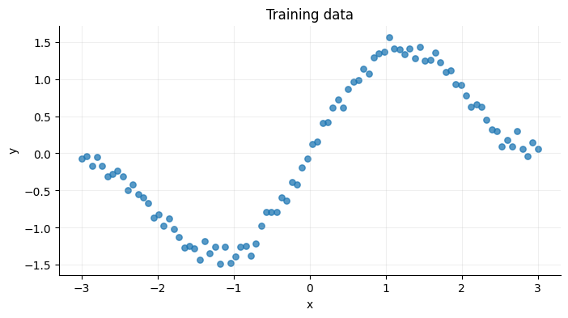
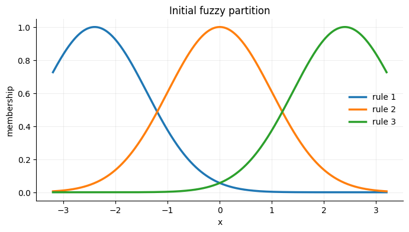
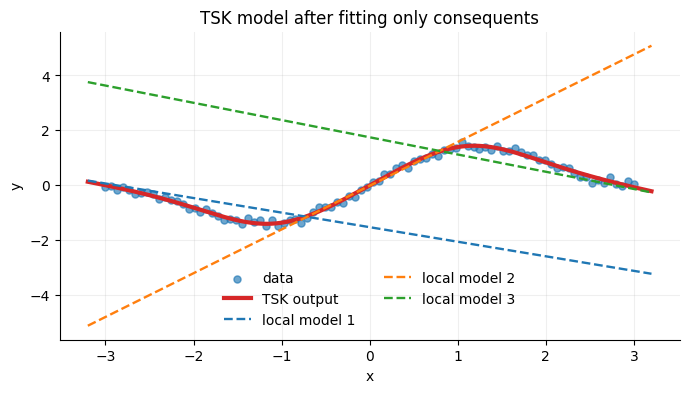
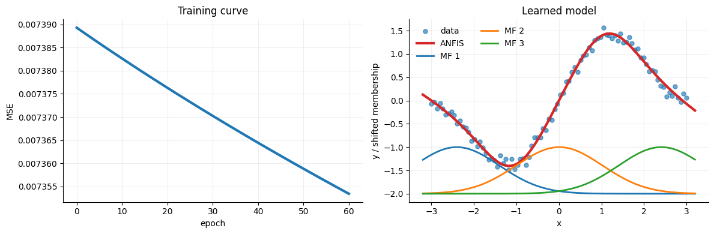

import numpy as np
import matplotlib.pyplot as plt
np.random.seed(4)
plt.rcParams.update({
"figure.figsize": (8, 4),
"axes.spines.top": False,
"axes.spines.right": False,
})ANFIS from scratch
This notebook implements a minimal Adaptive Network-based Fuzzy Inference System (ANFIS) for one-dimensional regression.
We will use:
- Gaussian membership functions for the rule antecedents.
- First-order TSK consequents, one local linear model per rule.
- Least squares to estimate consequent parameters.
- A simple numerical gradient to update premise parameters.
1. A toy regression problem
We generate a nonlinear function with small noise. A single linear model will not fit it well, but several local linear models can cooperate.
def make_data(n=90):
x = np.linspace(-3.0, 3.0, n)
noise = np.random.normal(0, 0.08, size=n)
y = np.sin(1.5 * x) + 0.35 * x + noise
return x, y
x_train, y_train = make_data()
plt.scatter(x_train, y_train, s=28, alpha=0.75)
plt.xlabel("x")
plt.ylabel("y")
plt.title("Training data")
plt.grid(alpha=0.2);
2. Membership functions
A one-dimensional first-order TSK rule has the form
\[ \mathcal{R}_i:\quad \text{IF }x\text{ is }A_i\text{ THEN }f_i(x)=a_i+b_i x. \]
The fuzzy set \(A_i\) is represented with a Gaussian membership function:
\[ \mu_i(x)=\exp\left[-\frac{1}{2}\left(\frac{x-c_i}{\sigma_i}\right)^2\right]. \]
Here, \(c_i\) is the center and \(\sigma_i\) is the width.
def gaussian_mf(x, center, sigma):
return np.exp(-0.5 * ((x - center) / sigma) ** 2)
centers = np.array([-2.4, 0.0, 2.4], dtype=float)
sigmas = np.array([1.0, 1.0, 1.0], dtype=float)
grid = np.linspace(-3.2, 3.2, 400)
for i, (c, s) in enumerate(zip(centers, sigmas), start=1):
plt.plot(grid, gaussian_mf(grid, c, s), lw=2.5, label=f"rule {i}")
plt.xlabel("x")
plt.ylabel("membership")
plt.title("Initial fuzzy partition")
plt.legend(frameon=False)
plt.grid(alpha=0.2);
3. Forward pass of a TSK model
For each sample \(x_k\):
- Compute membership values \(\mu_i(x_k)\).
- Convert them into normalized firing strengths:
\[ \bar w_i(x_k)=\frac{w_i(x_k)}{\sum_r w_r(x_k)}. \]
- Blend local linear consequents:
\[ \hat y_k=\sum_i \bar w_i(x_k)(a_i+b_i x_k). \]
def design_matrix(x, centers, sigmas):
"""Build the linear-regression matrix for fixed premise parameters."""
memberships = np.column_stack([
gaussian_mf(x, c, s) for c, s in zip(centers, sigmas)
])
weights = memberships / (memberships.sum(axis=1, keepdims=True) + 1e-12)
# For each rule i, columns are w_i_bar * 1 and w_i_bar * x.
columns = []
for i in range(len(centers)):
columns.append(weights[:, i])
columns.append(weights[:, i] * x)
Phi = np.column_stack(columns)
return Phi, weights, memberships
def fit_consequents(x, y, centers, sigmas):
"""Estimate consequent parameters by ordinary least squares."""
Phi, weights, memberships = design_matrix(x, centers, sigmas)
theta, *_ = np.linalg.lstsq(Phi, y, rcond=None)
return theta
def predict_tsk(x, centers, sigmas, theta):
Phi, weights, memberships = design_matrix(x, centers, sigmas)
return Phi @ theta, weights, memberships4. Consequent estimation by least squares
If the membership functions are fixed, the TSK model is linear in the consequent parameters.
That means the coefficients \((a_i,b_i)\) can be estimated with ordinary least squares.
theta = fit_consequents(x_train, y_train, centers, sigmas)
y_grid, weights_grid, memberships_grid = predict_tsk(grid, centers, sigmas, theta)
plt.scatter(x_train, y_train, s=26, alpha=0.65, label="data")
plt.plot(grid, y_grid, color="tab:red", lw=3, label="TSK output")
for i in range(len(centers)):
a_i, b_i = theta[2 * i], theta[2 * i + 1]
plt.plot(grid, a_i + b_i * grid, "--", lw=1.7, label=f"local model {i+1}")
plt.xlabel("x")
plt.ylabel("y")
plt.title("TSK model after fitting only consequents")
plt.legend(frameon=False, ncol=2)
plt.grid(alpha=0.2);
5. Hybrid learning
ANFIS alternates two ideas:
- Consequent step: for fixed membership functions, solve least squares.
- Premise step: update membership-function parameters to reduce prediction error.
For transparency, the next cell uses a numerical gradient for centers and widths. This is not the fastest implementation, but it is easy to inspect.
def mse_for_premises(x, y, centers, sigmas):
theta = fit_consequents(x, y, centers, sigmas)
pred, _, _ = predict_tsk(x, centers, sigmas, theta)
return np.mean((pred - y) ** 2), theta
def numerical_gradient(x, y, centers, sigmas, eps=1e-3):
grad_centers = np.zeros_like(centers)
grad_sigmas = np.zeros_like(sigmas)
for i in range(len(centers)):
c_plus = centers.copy()
c_minus = centers.copy()
c_plus[i] += eps
c_minus[i] -= eps
loss_plus, _ = mse_for_premises(x, y, c_plus, sigmas)
loss_minus, _ = mse_for_premises(x, y, c_minus, sigmas)
grad_centers[i] = (loss_plus - loss_minus) / (2 * eps)
s_plus = sigmas.copy()
s_minus = sigmas.copy()
s_plus[i] += eps
s_minus[i] = max(0.25, s_minus[i] - eps)
loss_plus, _ = mse_for_premises(x, y, centers, s_plus)
loss_minus, _ = mse_for_premises(x, y, centers, s_minus)
grad_sigmas[i] = (loss_plus - loss_minus) / (2 * eps)
return grad_centers, grad_sigmas
def train_anfis(x, y, centers, sigmas, epochs=60, learning_rate=0.18):
centers = centers.astype(float).copy()
sigmas = sigmas.astype(float).copy()
history = []
for epoch in range(epochs):
loss, theta = mse_for_premises(x, y, centers, sigmas)
history.append(loss)
grad_c, grad_s = numerical_gradient(x, y, centers, sigmas)
centers -= learning_rate * grad_c
sigmas = np.maximum(0.25, sigmas - learning_rate * grad_s)
final_loss, theta = mse_for_premises(x, y, centers, sigmas)
history.append(final_loss)
return centers, sigmas, theta, np.array(history)6. Train the ANFIS model
learned_centers, learned_sigmas, learned_theta, history = train_anfis(
x_train, y_train, centers, sigmas, epochs=60, learning_rate=0.18
)
print("Initial centers:", centers)
print("Learned centers:", np.round(learned_centers, 3))
print("Initial sigmas:", sigmas)
print("Learned sigmas:", np.round(learned_sigmas, 3))
print("Final MSE:", history[-1])Initial centers: [-2.4 0. 2.4]
Learned centers: [-2.402 0.01 2.409]
Initial sigmas: [1. 1. 1.]
Learned sigmas: [1. 1.014 1.003]
Final MSE: 0.007353420557215539fig, axes = plt.subplots(1, 2, figsize=(12, 4))
axes[0].plot(history, lw=3)
axes[0].set_xlabel("epoch")
axes[0].set_ylabel("MSE")
axes[0].set_title("Training curve")
axes[0].grid(alpha=0.2)
pred_grid, weights_grid, memberships_grid = predict_tsk(
grid, learned_centers, learned_sigmas, learned_theta
)
axes[1].scatter(x_train, y_train, s=26, alpha=0.65, label="data")
axes[1].plot(grid, pred_grid, color="tab:red", lw=3, label="ANFIS")
for i in range(len(learned_centers)):
axes[1].plot(grid, memberships_grid[:, i] - 2.0, lw=2, label=f"MF {i+1}")
axes[1].set_xlabel("x")
axes[1].set_ylabel("y / shifted membership")
axes[1].set_title("Learned model")
axes[1].legend(frameon=False, ncol=2)
axes[1].grid(alpha=0.2)
plt.tight_layout();
7. Inspect the learned rules
Each rule has a learned fuzzy antecedent and a learned local linear consequent.
for i in range(len(learned_centers)):
a_i, b_i = learned_theta[2 * i], learned_theta[2 * i + 1]
print(
f"Rule {i+1}: IF x is Gaussian(c={learned_centers[i]:.3f}, "
f"sigma={learned_sigmas[i]:.3f}) THEN y = {a_i:.3f} + {b_i:.3f} x"
)Rule 1: IF x is Gaussian(c=-2.402, sigma=1.000) THEN y = -1.479 + -0.517 x
Rule 2: IF x is Gaussian(c=0.010, sigma=1.014) THEN y = -0.012 + 1.615 x
Rule 3: IF x is Gaussian(c=2.409, sigma=1.003) THEN y = 1.666 + -0.604 xThings to try
- Change the number of rules.
- Change the initial centers and widths.
- Replace the numerical gradient with analytic gradients.
- Use two inputs and observe how the rule base grows.
- Compare this model with a polynomial regression or a neural network.